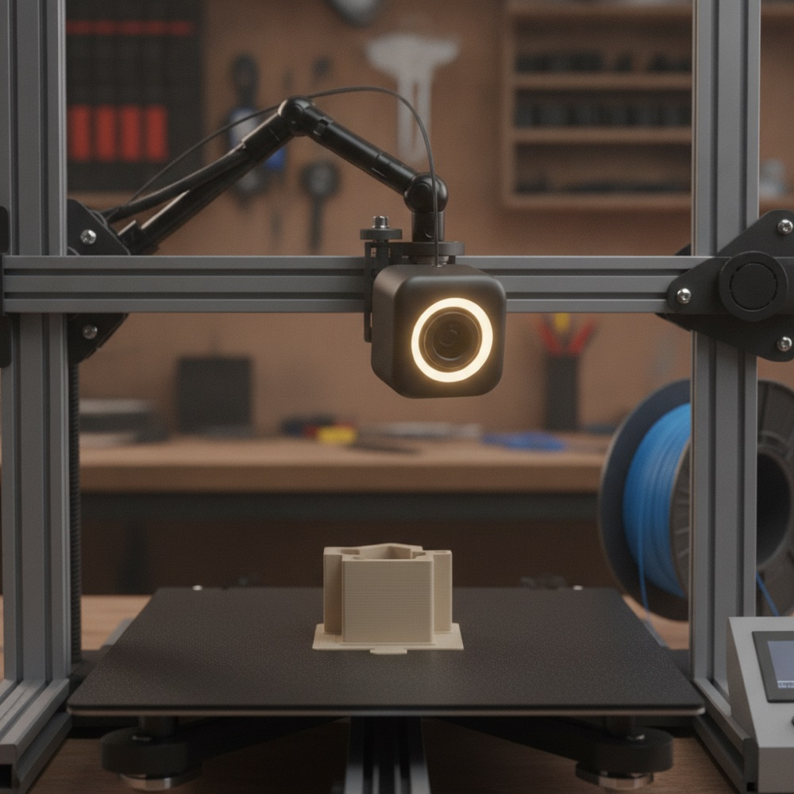
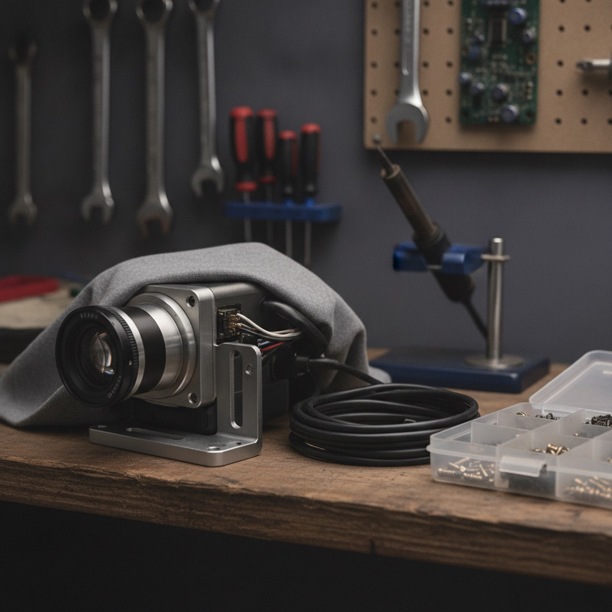
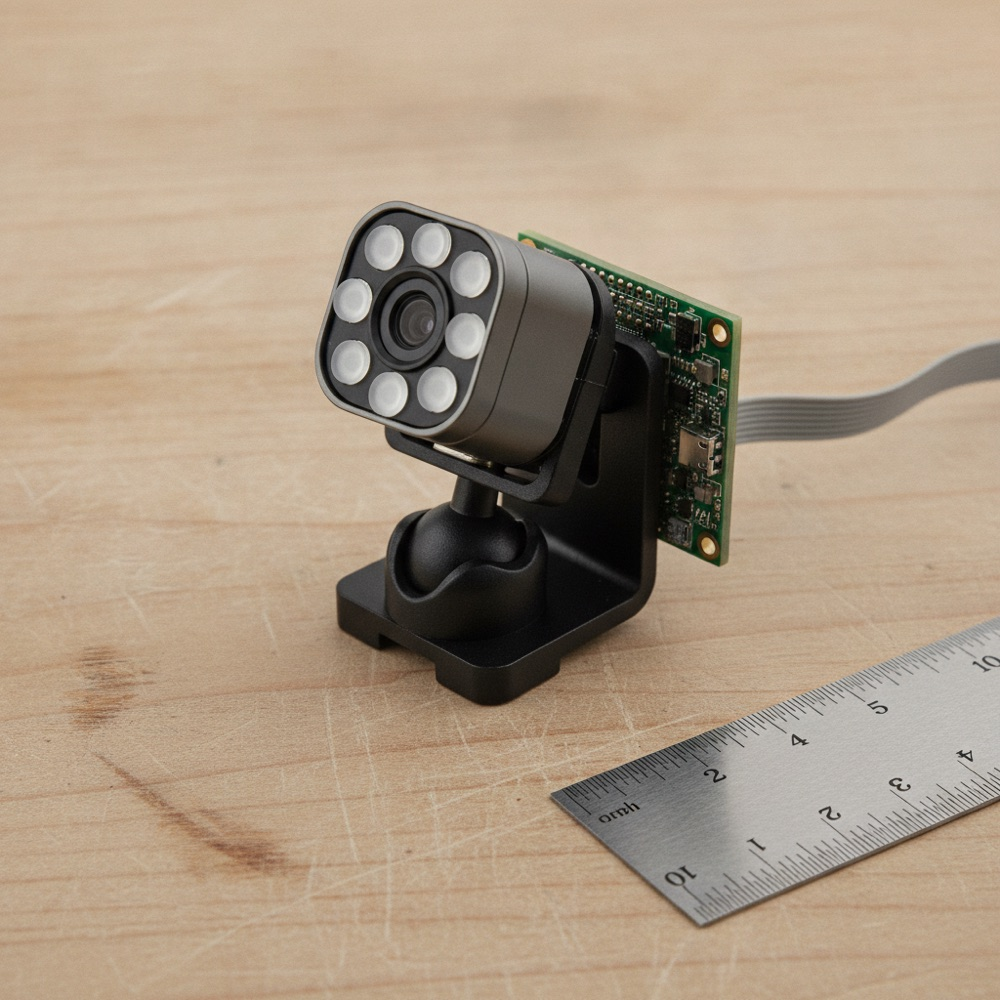
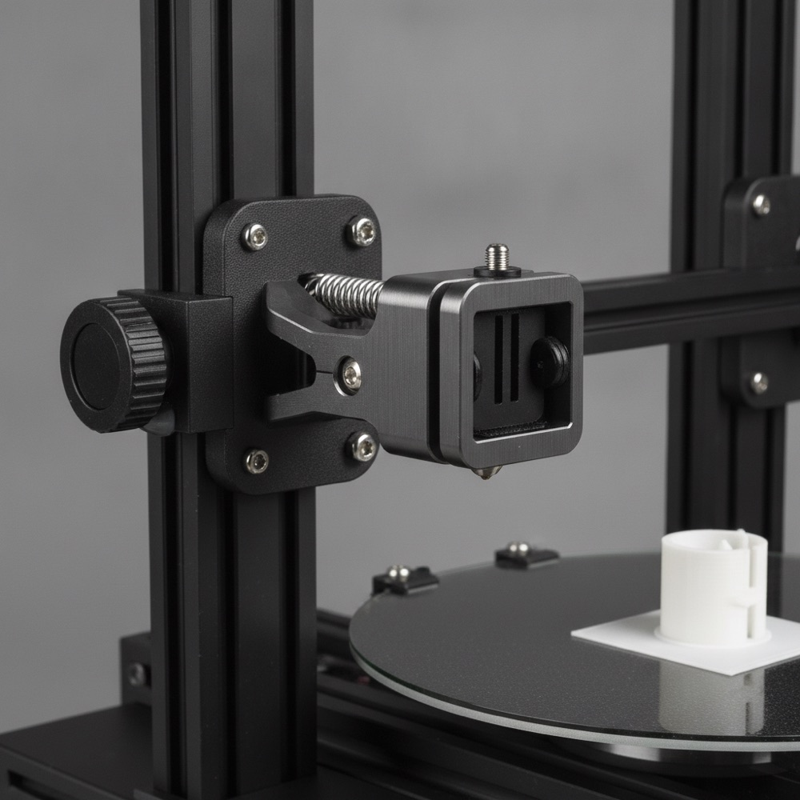
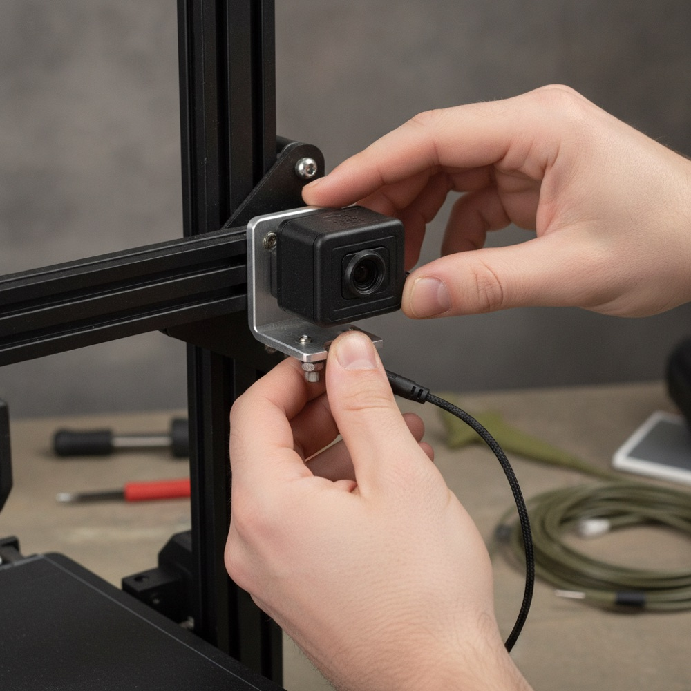

A fixed camera watches the build plate for the whole print and pushes an alert to a phone the moment it sees spaghetti, stringing, or a shifted layer.
Clips onto any FDM printer's frame. No firmware changes, and no cloud account needed for the alert to fire.

The DECIDE step is the one that is not obvious. Single frames misfire on filament color changes and light glare, so PrintSentry waits for three of the last five frames to agree before it wakes the phone.

PrintSentry's accuracy claim rests on comparing its live score against a person reviewing the same footage afterward, frame by frame, on prints the model never trained on.
Test protocol. Mount PrintSentry beside a reference camera on a fixed 60 mm baseline bracket, run 40 prints to completion or failure across three printers and four filament colors, and have a second person label every frame as defect or no-defect without seeing PrintSentry's score. Sample size: roughly 30 minutes of footage per print, one frame every two seconds, about 36,000 frames total.
Acceptance number. PrintSentry has to catch at least 90% of confirmed failures with no more than one false alarm per 10 successful prints. That bar matches the field precedent set by Obico's Spaghetti Detective, an open-source project that has run this same check on community printers for several years.
A false alarm costs a text message. A missed one costs a spool and an evening, so the debounce settings are tuned to over-alert rather than under-alert. If a test run misses the true-positive target, the fix is to loosen the debounce (2 of 5 frames instead of 3 of 5) before touching the model, since debounce strictness is the more likely cause of a missed catch than the model itself.
Reference: Obico (formerly The Spaghetti Detective), an open-source failure-detection project for FDM printers.
The original idea was to let PrintSentry cut printer power on a confirmed defect. A relay switching a live 24V, 15A heater and bed circuit hundreds of times over a project's life is a fire-risk component with no supervision, and a relay that welds shut mid-print is worse than the spaghetti it prevents. PrintSentry now sends the pause command through OctoPrint's API when OctoPrint is present, and alerts only otherwise. Reversible, with no new failure mode.
A single global 0.85 threshold does not survive contact with black or clear filament, both of which cut contrast and shift the model's baseline score. Each printer now runs a 5-minute calibration print on first use, records its own noise floor, and stores a per-filament threshold instead of one shared number. Skipping this step is the single most likely cause of both missed catches and false alarms in the field.
The original brief assumed ambient shop lighting was enough. It is not: a printer enclosure with the lid down, or evening light through a window, changes exposure enough to move the noise floor by 0.2, roughly a third of the way to the alert threshold. An 8-LED, 5V ring around the lens fixes exposure at one level regardless of the room, for $6 and 120 mA added to the power budget.
Prices are approximate, no volume discount. A second unit costs less than the evening lost restarting a failed calibration print, and a working spare means one camera can stay mounted through a multi-day print job.
| Part | What it does | Price |
|---|---|---|
| Raspberry Pi Zero 2 W | Runs the model, sends alerts | $15 |
| Camera Module 3, wide | Watches the build plate | $25 |
| MicroSD card, 32GB | Boots the Pi, stores logs | $8 |
| LED ring, 5V, 8-LED | Holds exposure constant | $6 |
| USB wall adapter, 5V 2A | Powers the whole unit | $8 |
| Printed bracket, ball joint | Mounts camera to frame | $3 |
| Ribbon cable extension, 300mm | Reaches Pi from camera | $5 |
| Printed enclosure | Shields Pi from dust | $4 |
| Standoffs, wire, fasteners | Assembly hardware | $3 |
| Total, per unit | $77 | |
Cheaper option: skip the LED ring and cable extension by mounting the Pi directly behind the camera, saving about $11, if the room has steady overhead light.


Mounting a camera is a Saturday afternoon. Teaching a model to tell a shifted layer from a shadow, on plastic in every color from black to clear, across different printers and lighting, is the actual work, and it is where most of the build time should go.
If the custom model is not hitting 90% true-positive by the second week of testing, fall back to Obico's published open-source model and weights rather than continuing to tune from scratch. Decision date: two weeks before the final demo, not the night before.
The ribbon cable is the failure nobody plans for. It runs past a moving gantry, and normal print vibration works screws loose and can pinch the cable against the frame over dozens of prints. Check the clamp and the cable's slack every ten prints.

Working specification. Not needed to understand the project.
MobileNetV2 (width multiplier 0.35), fine-tuned on labeled 3D-print-failure frames. Input 224x224, binary output (defect / no-defect) plus a confidence score. Exported as TFLite, int8 quantized, about 2.9MB. Inference on the Pi Zero 2 W's ARM Cortex-A53: about 180ms per frame. Default threshold 0.85, calibrated per filament profile. Debounce: 3 of the last 5 frames over threshold, within a 10-second window.
States: IDLE → WATCHING → SUSPECT (1–2 hits) → CONFIRMED (3+ hits) → ALERTED → COOLDOWN (5 minutes, suppresses repeat alerts for the same event).
Log: one CSV row per frame (timestamp, score, state). Snapshot JPEGs, about 150KB each, saved on a CONFIRMED transition, filename by timestamp.
Total draw about 720mA at 5V, 3.6W continuous. A 10-hour print draws about 36Wh. The unit stays plugged in for the duration, so no battery is needed. Margin: a 2A (10W) adapter against a 720mA load is about 2.8× headroom.
TFLite model, about 2.9MB, fits easily in the Pi Zero 2 W's 512MB RAM. A 32GB microSD card holds roughly 200,000 snapshot JPEGs before rotation is needed. Logs rotate weekly.
1. Power the Pi alone, confirm boot. 2. Attach the camera, confirm still capture. 3. Load the TFLite model, run inference on static test images. 4. Wire the LED ring, confirm PWM control. 5. Mount on the printer, confirm framing. 6. Run one full print with alerting disabled, review the log. 7. Enable alerting.
40 prints across 3 printers and 4 filament colors. Every frame labeled independently by a second person. Compute true-positive and false-positive rate. Confirm true-positive rate at or above 90%, false-positive rate at or below 1 per 10 successful prints. Re-run calibration after any camera repositioning.